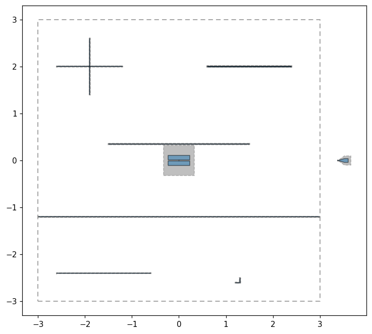
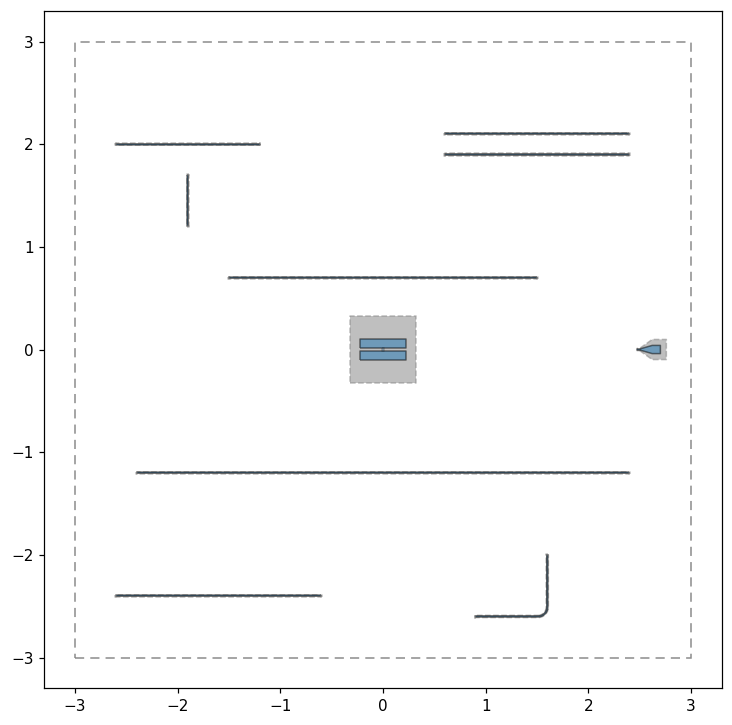

Note
This page was generated from tut/2-From-components-to-chip/2.24-Design-rule-checking.ipynb.
Design rule checking¶
A design that renders is not a design that works. Nothing in Quantum Metal stops you from routing a resonator straight through a feedline, from putting a launchpad past the chip edge, or from asking for a 90 um fillet on a 60 um segment. The picture looks plausible; the chip does not.
qiskit_metal.validation is a design rule check (DRC) for that class of mistake. It reads the built qgeometry tables and reports findings:
from qiskit_metal.validation import validate
result = validate(design)
print(result.report())
What the default rules check
Rule |
Catches |
Default |
Source |
|---|---|---|---|
|
two components’ metal overlapping on one layer – a short |
any overlap > 1 um^2 |
– |
|
metal too close to resolve in liftoff/etch |
2 um |
GDSII-to-wafer R8 |
|
CPW gap so narrow the interface participation ratio spikes |
3 um |
GDSII-to-wafer R1 |
|
geometry off the die, silently clipped downstream |
– |
– |
|
a segment too short to host its own fillet arc |
fillet radius |
– |
|
a CPW running close enough to a qubit pocket to couple |
3x CPW width |
project heuristic |
|
the ground plane split into disconnected regions |
– |
GDSII-to-wafer R9 |
Severity matters: ERROR is geometry that is wrong regardless of intent, WARNING is legal geometry that is probably unintended or spends a physical budget (loss, stray coupling). Only errors make a result falsy or raise.
These are a starting point, not a foundry sign-off. Every threshold is a constructor argument – see Tuning the rules below.
[1]:
# In Colab / Binder, uncomment to install Quantum Metal (lite, no Qt):
# !pip install -q quantum-metal
[2]:
import qiskit_metal as qm
from qiskit_metal import Dict, designs
from qiskit_metal.qlibrary.qubits.transmon_pocket import TransmonPocket
from qiskit_metal.qlibrary.terminations.launchpad_wb import LaunchpadWirebond
from qiskit_metal.qlibrary.terminations.open_to_ground import OpenToGround
from qiskit_metal.qlibrary.tlines.pathfinder import RoutePathfinder
from qiskit_metal.qlibrary.tlines.straight_path import RouteStraight
from qiskit_metal.validation import validate
def new_design():
design = designs.DesignPlanar()
design.overwrite_enabled = True
design.chips.main.size.size_x = "6mm"
design.chips.main.size.size_y = "6mm"
return design
def link(design, name, start, end, ori_start, ori_end, cls=RouteStraight, **options):
"""A CPW between two fresh open terminations -- shorthand for this notebook."""
OpenToGround(
design,
f"{name}_a",
options=dict(pos_x=start[0], pos_y=start[1], orientation=ori_start),
)
OpenToGround(
design,
f"{name}_b",
options=dict(pos_x=end[0], pos_y=end[1], orientation=ori_end),
)
return cls(
design,
name,
options=Dict(
pin_inputs=Dict(
start_pin=Dict(component=f"{name}_a", pin="open"),
end_pin=Dict(component=f"{name}_b", pin="open"),
),
**options,
),
)
A design with one defect per rule¶
Each block below is a mistake that is easy to make and hard to see. Read them now, then look at the plot and try to spot them before running the check.
[3]:
design = new_design()
TransmonPocket(design, "Q1", options=dict(pos_x="0mm", pos_y="0mm"))
# 1. metal-overlap: two CPWs cross. On one layer, that is a short.
link(design, "cross_h", ("-2.6mm", "2mm"), ("-1.2mm", "2mm"), "180", "0")
link(design, "cross_v", ("-1.9mm", "1.4mm"), ("-1.9mm", "2.6mm"), "270", "90")
# 2. metal-spacing: parallel CPWs 1 um apart. Not a short in the CAD, but
# liftoff residue bridges gaps this narrow.
link(design, "near_a", ("0.6mm", "2.0055mm"), ("2.4mm", "2.0055mm"), "180", "0")
link(design, "near_b", ("0.6mm", "1.9945mm"), ("2.4mm", "1.9945mm"), "180", "0")
# 3. cpw-gap: a 1 um gap concentrates field in the lossy substrate interface.
link(
design,
"thin",
("-2.6mm", "-2.4mm"),
("-0.6mm", "-2.4mm"),
"180",
"0",
trace_gap="1um",
)
# 4. chip-bounds: the launchpad hangs off the die.
LaunchpadWirebond(
design, "LP", options=dict(pos_x="3.4mm", pos_y="0mm", orientation="180")
)
# 5. short-segment: 100 um legs cannot host a 150 um fillet radius.
link(
design,
"kink",
("1.2mm", "-2.6mm"),
("1.3mm", "-2.5mm"),
"180",
"90",
cls=RoutePathfinder,
fillet="150um",
)
# 6. qubit-clearance: a CPW skimming Q1's pocket couples to the qubit.
link(design, "hug", ("-1.5mm", "0.35mm"), ("1.5mm", "0.35mm"), "180", "0")
# 7. ground-continuity: a CPW reaching both die edges cuts the ground in two.
link(design, "split", ("-2.994mm", "-1.2mm"), ("2.994mm", "-1.2mm"), "180", "0")
design.rebuild()
design.components.keys()
02:51AM 01s WARNING [check_lengths]: For path table, component=kink, key=trace has short segments that could cause issues with fillet. Values in (1-1) are index(es) in shapely geometry.
02:51AM 01s WARNING [check_lengths]: For path table, component=kink, key=cut has short segments that could cause issues with fillet. Values in (1-1) are index(es) in shapely geometry.
02:51AM 02s WARNING [check_lengths]: For path table, component=kink, key=trace has short segments that could cause issues with fillet. Values in (1-1) are index(es) in shapely geometry.
02:51AM 02s WARNING [check_lengths]: For path table, component=kink, key=cut has short segments that could cause issues with fillet. Values in (1-1) are index(es) in shapely geometry.
[3]:
['Q1',
'cross_h_a',
'cross_h_b',
'cross_h',
'cross_v_a',
'cross_v_b',
'cross_v',
'near_a_a',
'near_a_b',
'near_a',
'near_b_a',
'near_b_b',
'near_b',
'thin_a',
'thin_b',
'thin',
'LP',
'kink_a',
'kink_b',
'kink',
'hug_a',
'hug_b',
'hug',
'split_a',
'split_b',
'split']
[4]:
fig = qm.view(design)
qm.show_inline(fig)

The dashed rectangle is the die outline – qm.view draws it so geometry placed off the chip is visible rather than silently clipped downstream (pass chip_outline=False for the geometry alone). The launchpad on the right is plainly outside it.
The rest are invisible at this zoom. That is the point – the eye checks topology, not micron-scale spacing.
Run the checks¶
[5]:
result = validate(design)
print(result.report())
10 finding(s) from 7 rule(s): 3 error(s), 7 warning(s)
[error] metal-overlap: cross_h and cross_v overlap by 100 um^2 of metal on layer 1 @ (-1.9000, 2.0000)
[error] metal-spacing: near_a and near_b are 1.00 um apart (minimum 2.00 um) @ (2.4000, 2.0000)
[warning] cpw-gap: thin has a 1.00 um CPW gap (minimum 3.00 um) @ (-2.6000, -2.4000)
[error] chip-bounds: LP extends 660.0 um beyond the 'main' chip outline @ (3.5175, 0.0000)
[warning] short-segment: kink.trace segment 0 is 100.0 um long but needs 150.0 um for a 150.0 um fillet @ (1.2500, -2.6000)
[warning] short-segment: kink.trace segment 1 is 100.0 um long but needs 150.0 um for a 150.0 um fillet @ (1.3000, -2.5500)
[warning] short-segment: kink.cut segment 0 is 100.0 um long but needs 150.0 um for a 150.0 um fillet @ (1.2500, -2.6000)
[warning] short-segment: kink.cut segment 1 is 100.0 um long but needs 150.0 um for a 150.0 um fillet @ (1.3000, -2.5500)
[warning] qubit-clearance: hug passes 14.0 um from Q1's pocket (0.64x CPW width; want 3.0x = 66 um) @ (0.0000, 0.3500)
[warning] ground-continuity: ground plane on layer 1 is split into 2 disconnected regions (mm^2: 24.528, 10.705); confirm airbridges or vias tie them together -- this check sees only same-layer metal @ (0.0000, -1.8000)
Reading the result¶
validate returns a ValidationResult. It is falsy when there are errors, so it drops straight into an if. Each Finding is a frozen dataclass with the rule name, severity, message, the components involved, an (x, y) location in millimetres, and the measured value against the limit it missed.
[6]:
print("passes:", bool(result))
print("errors:", len(result.errors), " warnings:", len(result.warnings))
worst = result.errors[0]
print()
print("rule: ", worst.rule)
print("severity: ", worst.severity)
print("components:", worst.components)
print("location: ", worst.location)
print("value/limit:", worst.value, "/", worst.limit)
passes: False
errors: 3 warnings: 7
rule: metal-overlap
severity: error
components: ('cross_h', 'cross_v')
location: (-1.9, 2.0)
value/limit: 9.999999999999574e-05 / 1e-06
[7]:
# Group by rule to see the shape of the problem rather than a flat list.
from collections import Counter
Counter(f.rule for f in result.findings)
[7]:
Counter({'short-segment': 4,
'metal-overlap': 1,
'metal-spacing': 1,
'cpw-gap': 1,
'chip-bounds': 1,
'qubit-clearance': 1,
'ground-continuity': 1})
Fixing them¶
Each finding names the physics it protects, so the fix is not arbitrary.
``metal-overlap`` – move
cross_vclear ofcross_h. If the crossing is deliberate, it needs an airbridge: those sit on their own layer and the rule is layer-aware, so a bridged crossing does not report.``metal-spacing`` – open the gap to 200 um. The 2 um default comes from published superconducting-chip rule sets; your foundry sets the real number.
``cpw-gap`` – back to the standard 6 um. Narrow gaps push field into the substrate-metal interface, where two-level-system loss lives.
``chip-bounds`` – pull the launchpad onto the die, or grow the die. Off-chip geometry is silently clipped by the GDS and FEM renderers.
``short-segment`` – either lengthen the legs or shrink the fillet. A segment must be at least the fillet radius long (twice, if it is an interior segment with a corner at each end) or the renderer drops the arc and you get a sharp corner – a current crowding point.
``qubit-clearance`` – move the CPW away from the pocket. This is a project heuristic, not a literature value: 3x the CPW width is a conservative starting point, not a coupling calculation.
``ground-continuity`` – stop the CPW short of the die edges so ground can flow around it. A split ground plane is not automatically wrong – airbridges tie the pieces together and this rule cannot see them – but an unintended split hosts slotline modes.
[8]:
design = new_design()
TransmonPocket(design, "Q1", options=dict(pos_x="0mm", pos_y="0mm"))
link(design, "cross_h", ("-2.6mm", "2mm"), ("-1.2mm", "2mm"), "180", "0")
link(design, "cross_v", ("-1.9mm", "1.2mm"), ("-1.9mm", "1.7mm"), "270", "90")
link(design, "near_a", ("0.6mm", "2.1mm"), ("2.4mm", "2.1mm"), "180", "0")
link(design, "near_b", ("0.6mm", "1.9mm"), ("2.4mm", "1.9mm"), "180", "0")
link(
design,
"thin",
("-2.6mm", "-2.4mm"),
("-0.6mm", "-2.4mm"),
"180",
"0",
trace_gap="6um",
)
LaunchpadWirebond(
design, "LP", options=dict(pos_x="2.5mm", pos_y="0mm", orientation="180")
)
link(
design,
"kink",
("0.9mm", "-2.6mm"),
("1.6mm", "-2.0mm"),
"180",
"90",
cls=RoutePathfinder,
fillet="90um",
)
link(design, "hug", ("-1.5mm", "0.7mm"), ("1.5mm", "0.7mm"), "180", "0")
link(design, "split", ("-2.4mm", "-1.2mm"), ("2.4mm", "-1.2mm"), "180", "0")
design.rebuild()
result = validate(design)
print(result.report())
Design rules passed (7 rules ran, no findings).
[9]:
fig = qm.view(design)
qm.show_inline(fig)

Tuning the rules¶
Thresholds are constructor arguments, so a process design kit that differs from the defaults is a call, not a fork. Pass rules= to run a different set – either a subset, or the defaults with one swapped out.
[10]:
from qiskit_metal.validation import DEFAULT_RULES, CPWGapRule, MetalSpacingRule
# Just one rule, at a tighter limit than the default.
print(validate(design, rules=[CPWGapRule(min_gap="10um")]).report())
8 finding(s) from 1 rule(s): 0 error(s), 8 warning(s)
[warning] cpw-gap: cross_h has a 6.00 um CPW gap (minimum 10.00 um) @ (-1.2000, 2.0000)
[warning] cpw-gap: cross_v has a 6.00 um CPW gap (minimum 10.00 um) @ (-1.9000, 1.2000)
[warning] cpw-gap: near_a has a 6.00 um CPW gap (minimum 10.00 um) @ (2.4000, 2.1000)
[warning] cpw-gap: near_b has a 6.00 um CPW gap (minimum 10.00 um) @ (2.4000, 1.9000)
[warning] cpw-gap: thin has a 6.00 um CPW gap (minimum 10.00 um) @ (-2.6000, -2.4000)
[warning] cpw-gap: kink has a 6.00 um CPW gap (minimum 10.00 um) @ (1.6000, -2.6000)
[warning] cpw-gap: hug has a 6.00 um CPW gap (minimum 10.00 um) @ (-1.5000, 0.7000)
[warning] cpw-gap: split has a 6.00 um CPW gap (minimum 10.00 um) @ (-2.4000, -1.2000)
[11]:
# The 2 um default is a fabrication limit. A crosstalk budget is a separate,
# much looser constraint -- unconnected CPWs kept 250 um apart. Replacing the
# rule rather than adding one matters: both copies would run, and the design
# would be reported twice.
house_rules = [r for r in DEFAULT_RULES if r.name != "metal-spacing"]
house_rules.append(MetalSpacingRule(min_spacing="250um"))
print(validate(design, rules=house_rules).report())
1 finding(s) from 7 rule(s): 1 error(s), 0 warning(s)
[error] metal-spacing: near_a and near_b are 190.00 um apart (minimum 250.00 um) @ (2.4000, 2.0000)
Severity is an argument too. Promote a warning to an error when your process treats it as a hard rule, and the result turns falsy.
[12]:
from qiskit_metal.validation import Severity
strict_gap = CPWGapRule(min_gap="10um", severity=Severity.ERROR)
print(bool(validate(design, rules=[strict_gap])))
False
Failing the build¶
In a design script or CI job you want the check to stop the run, not print. strict=True raises DesignRuleViolation on any error.
[13]:
from qiskit_metal.validation import DesignRuleViolation
try:
validate(design, rules=[strict_gap], strict=True)
except DesignRuleViolation as exc:
print("build stopped:")
print(str(exc).splitlines()[0])
build stopped:
8 finding(s) from 1 rule(s): 8 error(s), 0 warning(s)
The same thing, without exceptions, at the end of a build script:
result = validate(design)
if not result:
print(result.report())
raise SystemExit(1)
Quantum Metal gates its own shipped reference designs this way – see tests/test_reference_designs.py.
Writing your own rule¶
A rule is any object with a name, a description, and a check(design) that yields Findings. Subclass DesignRule and use the same helpers the built-in rules use: chip_bounds, component_geometry (which unions each component’s drawn metal, per layer if you ask), and representative_point.
Here is a fab rule the defaults do not cover: nothing may reach into the dicing street at the die edge.
[14]:
from shapely.geometry import box
from qiskit_metal.validation import (
DesignRule,
Finding,
chip_bounds,
component_geometry,
representative_point,
)
class KeepOutBorderRule(DesignRule):
"""Metal must stay clear of the dicing street at the chip edge."""
name = "keep-out-border"
description = "Metal reaches into the dicing street."
def __init__(self, margin="400um", severity=Severity.ERROR):
self.margin = margin
self.severity = severity
def check(self, design):
margin = design.parse_value(self.margin)
minx, miny, maxx, maxy = chip_bounds(design)
keep_in = box(minx + margin, miny + margin, maxx - margin, maxy - margin)
for name, geometry in component_geometry(design).items():
outside = geometry.difference(keep_in)
if outside.is_empty:
continue
yield Finding(
rule=self.name,
severity=self.severity,
message=(
f"{name} reaches {margin * 1000:.0f} um into the dicing street"
),
components=(name,),
location=representative_point(outside),
value=outside.area,
limit=0.0,
)
print(validate(design, rules=[KeepOutBorderRule()]).report())
2 finding(s) from 1 rule(s): 2 error(s), 0 warning(s)
[error] keep-out-border: kink reaches 400 um into the dicing street @ (1.2521, -2.6026)
[error] keep-out-border: LP reaches 400 um into the dicing street @ (2.6510, 0.0000)
What this does not check¶
DRC is a geometry check. It says nothing about whether your resonator is at the frequency you wanted, whether the coupling is right, or whether the qubit is anharmonic enough – those need the analysis notebooks in section 4. It also knows nothing about your foundry’s actual rule deck; the defaults are a published starting point.
Three known limits worth stating plainly:
Layers are trusted. Overlap and spacing are checked per layer, so metal on layer 30 crossing metal on layer 1 is fine. If your stack does not match that assumption, the rules will miss real shorts.
``net_info`` is trusted. Components joined through a pin are exempt from the overlap and spacing rules, because a route abutting its termination is not a short.
``ground-continuity`` sees one layer. It reports that the ground is split, not that a piece is floating – an airbridge on another layer may well tie the pieces together.
References¶
From GDSII to Wafer: EDA Design Flow and Data Conversion for Wafer-Scale Manufacturing of Superconducting Quantum Chips, arXiv:2604.11379 – the R1 / R8 / R9 thresholds used above.
A Review of Design Concerns in Superconducting Quantum Circuits, arXiv:2411.16967 – crosstalk mechanisms and airbridge placement.
Airbridges in Quantum Metal: tutorial 2.15.
Full worked designs that pass these rules: Appendix A.
For more information, review the Introduction to Quantum Computing and Quantum Hardware lectures below
|
Lecture Video | Lecture Notes | Lab |
|
Lecture Video | Lecture Notes | Lab |
|
Lecture Video | Lecture Notes | Lab |
|
Lecture Video | Lecture Notes | Lab |
|
Lecture Video | Lecture Notes | Lab |
|
Lecture Video | Lecture Notes | Lab |